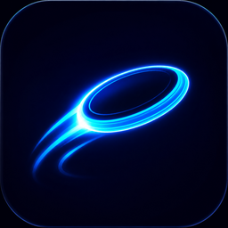

Disc golf analyzer app for iPhone
Analyze your disc’s flight.
Dial in your throw.
Film one slow-motion throw to see what your release and early flight are doing, then walk to your disc for an accurate distance with no GPS drift. It works with any disc in your bag, with no sensor disc or launch monitor needed.
- Works with any disc
- 5 free analyses
- No account needed
- Video stays on your iPhone

Flight analysis
Speed, disc tilt, and launch angle from one slow-motion throw.
Film a throw in slow motion and ThrowLab gives you speed, disc tilt, and launch angle from your release and early flight. Each reading sits next to your earlier throws with that disc and throwing style, so you know whether it was your usual or something new. Record right in the app or upload a clip you already have.
Distance is measured separately, by walking to your disc.

Distance tracking
Accurate distances, with no GPS drift.
Walk from where you threw to where your disc landed and you have your number. Your result doesn’t depend on a wandering GPS dot, so a throw in the woods reads as steady as one in an open field. Each distance also shows estimated elevation, wind, and where it ranks among your throws with that disc.
Know whether 312 feet was a normal throw or a new best.
Compare average and best distances to pick the right disc for the shot.
Field tested to within one foot of the reference distance, including on wooded courses.

Flight trends
Learn what makes your throws consistent.
Line up your recent throws with one disc and throwing style to see which readings repeat and which wander. Try a new grip or stance, then check the next set against the last.
Pick a disc and throwing style to compare your recent throws.

Practice history
Track your progress by disc, course, and session.
Throw at the field, on the course, or into a net in the backyard, and ThrowLab groups your throws into sessions on its own. Add a course if you want one attached.
Filter by course, disc, date, or throwing style. Pull up last Saturday at the field, or every throw you’ve made with one disc this month.
Milestones
Always know the number to beat.
Your farthest and fastest throws stay on record with the disc and throwing style that made them, so every practice has a target.


Your discs
Keep a separate record for every disc.
Two discs of the same mold don’t have to share a history. Your Champion Thunderbird and Star Thunderbird each keep their own throws, averages, and records.
Search the catalog and ThrowLab fills in the flight numbers. Add the plastic once and every new throw lands in the right history.
Compare discs
Find the disc your bag is missing.
Want more turn, a stronger finish, or something to fill the gap between two discs you already carry? Lay their flight paths over each other before you buy, then change arm power and throwing style to see how each one finishes.
Paths are based on manufacturer flight ratings, not your video.

How it works
Record in ThrowLab or upload a throw.
Analyze a slow-motion throw for flight, or walk to your disc for distance. Both start from the same screen.
- 01
Choose your disc and throwing style
Your results land in the right history from the first throw.
- 02
Film or upload the throw
Slow motion from the side, with your release and early flight in the clip.
- 03
Get your flight numbers
Speed, disc tilt, and launch angle, next to your earlier throws with that disc.
- 04
Walk it for distance
Walk to your disc and the distance saves with the rest of that disc’s history.
Recording setup
Give the camera a clear view.
Film from the side in good light, in 240 fps slow motion. ThrowLab reads your release and early flight, so keep the disc in the shot after it leaves your hand.
The longer the disc stays in clear view, the better your reading. Set the camera up the same way each time so your throws compare fairly.
Frequently asked questions
Why is ThrowLab’s distance more accurate than a GPS app?
ThrowLab’s distance doesn’t drift the way a GPS reading does. Phone GPS can wander by many feet, especially under trees, while ThrowLab gives the same steady reading in the woods as in an open field.
How accurate is the distance tracker?
ThrowLab has been field tested to within one foot of the reference distance, including on wooded courses.
How is ThrowLab different from a sensor disc or launch monitor?
ThrowLab is an app, not hardware. Nothing gets attached to your discs, so you can measure and compare your whole bag while every disc stays stock. It also measures distance and keeps a history for each disc.
Is there a disc golf launch monitor app for iPhone?
Yes. ThrowLab gives you speed, disc tilt, and launch angle from a slow-motion video of your throw, with no hardware.
Can I measure my throw speed without a radar or sensor disc?
Yes. ThrowLab estimates speed from slow-motion video of your release and early flight. Its speed readings have been tested against multiple radar devices, with results within a few mph.
Do I need a special disc or extra hardware?
No. ThrowLab works with every disc in your bag. There’s no sensor to buy or attach, and nothing to modify.
What iPhone do I need?
iOS 17 or later, and an iPhone that records 240 fps slow motion. You can record in ThrowLab or upload a slow-motion clip from Photos. Distance measurement works on any supported iPhone.
Can I record directly in ThrowLab?
Yes. Film the throw in the app, or upload a slow-motion clip from Photos.
What do disc tilt and launch angle mean?
Disc tilt is how far the disc’s rim is tilted up or down as it leaves your hand and starts its flight. Launch angle is whether the disc is heading up, level, or down early in its flight. A tilted disc can still launch level.
What part of the throw does ThrowLab measure?
Your release and early flight. Because ThrowLab keeps reading the disc after it leaves your hand, its numbers can differ slightly from devices that only measure at release.
Can I practice into a net?
Yes. Leave some room in front of the net so the disc stays in view for a moment after release. Backyard, field, and course throws all work too.
Does it work for forehand and left-handed throws?
Yes. Choose forehand or backhand, right- or left-handed, before you analyze.
Are my videos uploaded?
No. Throw videos are processed on your iPhone and are not uploaded for analysis. No account is required.
How much does ThrowLab cost?
Your first 5 analyses are free, flight or distance, with no account. After that, ThrowLab Pro is $4.99 a month or $39.99 a year for unlimited analyses.
Practice guides
Filming tips and help with your results.
Short guides on camera setup, the three flight readings, and tracking progress over time.
How to record a disc golf throw for analysis
Learn where to place the camera, what to keep in the clip, and how to find the disc.
Read guide →How to read your ThrowLab analysis
Understand speed, disc tilt, launch angle, and flight trends in ThrowLab.
Read guide →How to track your disc golf practice progress
Compare the same disc and throwing style across practice sessions.
Read guide →
Available for iPhone
Level up with ThrowLab. Your first 5 analyses are free.
Use the discs you already own, no account needed. After your 5 free analyses, ThrowLab Pro is $4.99 a month or $39.99 a year.